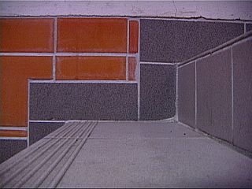

Vad ska vi mena med "lutningen" hos
en trappa eller ledstång?
Hur många olika sätt kan du komma på?

Uppgifter
Vilken är Storumans brantaste trappa? Redovisa hur du kom fram till svaret genom att ordna alla förslag från gruppen efter trappornas lutning. Visa även trappans lutning med en graf i ett koordinatsystem.
Trappan ska ha en ledstång som sitter 80 cm över trappstegen. Vilken ekvation kan användas för att beskriva ledstången?
Antag att trappan skulle behöva vara
m hög. Hur långt ifrån högsta punkten (i horisontell led) skulle den då behöva börja?
Kommer du ihåg "Johans schackproblem"? Rita en graf som beskriver antalet vetekorn som funktion av schackrutans nummer.
Diskutera följande: Är trappan brantare än föregående graf? Hur kan man jämföra?
Ta en kopp hett kaffe eller te. Hur fort svalnar det efter precis 2 minuter? Mät med termometer och rita diagram med hjälp av Excel och diskutera frågan. Efter hur lång tid är det drickbart om temperaturen är
°C från början? Avgör frågan med hjälp av diagrammet.
Föreslå några olika sätt att bestämma lutningen på en graf respektive förändringshastigheten för någon process (t.ex. "kaffeavsvalning på fjället"). Ett tips kan vara att tänka sig en "minitrappa" med "oändligt korta trappsteg" som man placerar så att den passar "perfekt" till grafen där man vill veta lutningen. Försök beskriva detta matematiskt. Detta är ett av kursens viktigaste mål!
För ytterligare träning och förklaringar se läroboken sidan 57–61. Lös minst två av uppgifterna på dessa sidor.